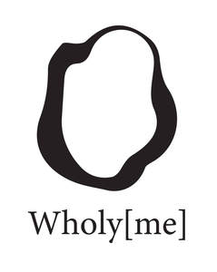

Trade Mark Journal No.2025/009 28 February 2025
UK00004163106 20 February 2025 (3,5,35,44)

- Class 3
- Bath salts; Bath and shower preparations; Shower and bath preparations; Preparations for use in the bath or shower; Preparations for the bath and shower; Non-medicated bath salts; Cosmetic bath salts; Bath oil; Bath and shower oils [non-medicated]; Bath preparations; Preparations for the bath; Cosmetic preparations for bath and shower; Non-medicated bath oils; Bath oils (Non-medicated -); Bath soak for cosmetic use; Bath preparations (Non-medicated -); Aromatic oils for the bath; Lip balm; Cleansing balm; Lip balm [non-medicated]; Beauty balm creams; Lip balms; Lip balms [non-medicated]; Baby bottom balm; Skin balms (Non-medicated -); Non-medicated skin balms; Skin balms [cosmetic]; Foot balms (Non-medicated -); Moisturising body lotion [cosmetic]; Skin lotion; Moisturizing creams; Moisturising skin lotions [cosmetic]; Moisturising creams, lotions and gels; Moisturising creams; Cosmetic nourishing creams; Skin moisturizer; Salves [non-medicated]; Scented body lotions and creams; Moisturising gels [cosmetic]; Skin moisturiser; Non-medicated skin lotions; Aromatherapy lotions; Aromatherapy creams; Baby lotion; Skin lotions; Beauty lotions; Skin moisturizers; Skin recovery creams [cosmetics]; Refill packs for skin care cream dispensers; Hand lotion (Non-medicated -); Skin moisturizers used as cosmetics; Hydrating creams for cosmetic use; Body care cosmetics; Soaps for body care; Preparations for the care of the body; Lotions for face and body care; Cosmetic preparations for body care; Non-medicated body care preparations; Essences for skin care; Skin care cosmetics; Body lotions; Body lotion; Skin care preparations; Skin care creams, other than for medical use; Skin care oils [cosmetic]; Body scrubs; Body wash; Body scrub; Skin care oils [non-medicated]; Exfoliants for the care of the skin; Skin care lotions [cosmetic]; Body moisturisers; Cosmetic body scrubs; Body scrubs [cosmetic]; Body oils; Cosmetic preparations for skin care; Skin care (Cosmetic preparations for -); Body oils [for cosmetic use]; Body creams; Moisture body lotion; Cosmetic patches containing sunscreen and sun block for use on the skin; Gel eye patches for cosmetic purposes; Patches containing sun screen and sun block for use on the skin; Facial packs; Cosmetic facial packs; Facial packs [cosmetic]; Pores tightening mask packs used as cosmetics; Cosmetic creams for dry skin; Skin masks.
- Class 5
- Vitamin supplements; Dietary supplements; Nutritional supplements; Herbal supplements; Probiotic supplements; Homeopathic supplements; Flaxseed dietary supplements; Calcium supplements; Chlorella dietary supplements; Anti-oxidant supplements; Colostrum supplements; Protein supplements; Dietary supplements consisting of vitamins; Prebiotic supplements; Food supplements; Dietary and nutritional supplements; Nutraceuticals for use as a dietary supplement; Protein dietary supplements; Dietary supplements with a cosmetic effect; Folic acid dietary supplements; Calcium tablets as a food supplement; Herbal dietary supplements for persons special dietary requirements; Multivitamins; Zinc supplement lozenges; Food supplements for non-medical purposes; Fitness and endurance supplements; Protein supplement shakes; Multi-vitamin preparations; Preparations of vitamins; Antioxidant pills; Dietary supplemental drinks; Multivitamin preparations; Vitamin tablets; Transdermal patches; Transdermal patches for medical treatment; Vitamin supplement patches; Adhesive patches for medical purposes; Patches impregnated with acne treatment preparations; Eye patches for medical purposes; Heating patches for medical purposes; Adhesive bandages.
- Class 35
- Wholesale services in relation to dietary supplements; Retail services in relation to dietary supplements.
- Class 44
- Cosmetic body care services; Cosmetic body care services provided by health spas; Cosmetic treatment for the body; Skin care salons.
WholyMe ltd